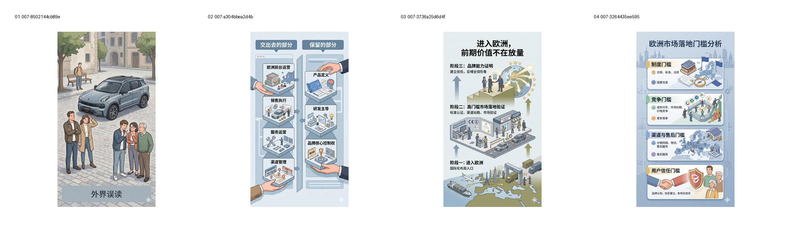
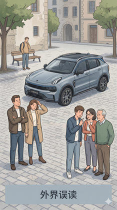
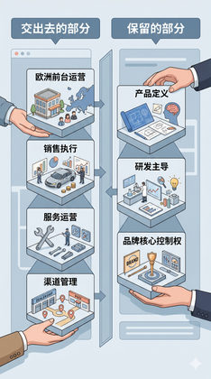
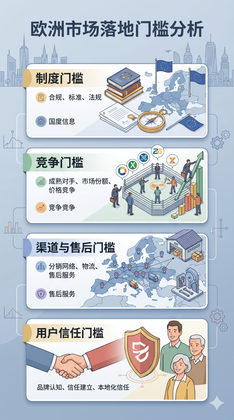

验证 Hybrid Balanced 作为主线默认候选的结构与叙事平衡。
Evidence: references/text2pic/conversations/007-Branch-1-V1视觉系统设计/IMAGE_MANIFEST.md § 7. 第六组：SVP 第 2 轮 W/H/C（12 张） / H


8fc338e5cf105f85…

795ca9575461fb40…
b0308f2c6a2a4642…

54d0af0f901d8f8f…